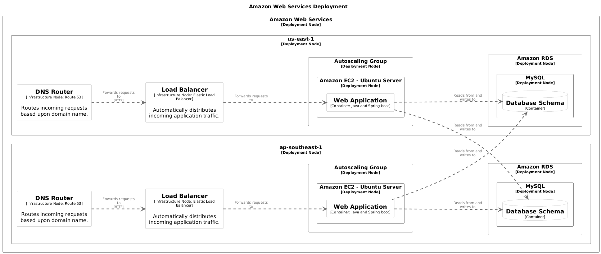
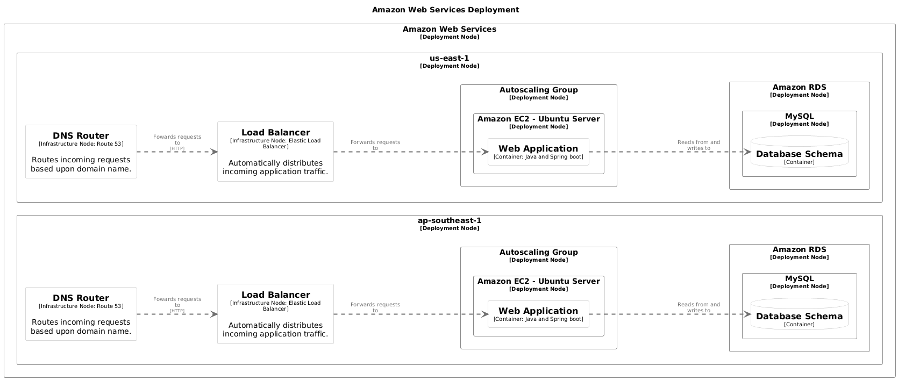

Models¶
Models are the fundamental building blocks of your architecture documentation in buildzr. They represent the different elements that make up your software system, from high-level abstractions like people and systems down to specific implementation details like components and deployment infrastructure. buildzr provides full support for all core C4 model element types, enabling you to create comprehensive architecture diagrams at multiple levels of detail.
Understanding Model Categories¶
Your architecture models can be divided into two distinct categories: static models and instance models.
Static models define the logical architecture of your system — the abstract concepts, relationships, and structure of your software independent of any specific deployment. These include people who interact with the system, the software systems themselves, and their internal structure broken down into containers and components. Static models answer questions like “What systems exist?” and “How are they organized?”
Instance models describe the physical deployment and runtime manifestation of your static models. They represent where and how your software actually runs in the real world — deployment environments, infrastructure nodes, and specific instances of containers deployed to those nodes. Instance models answer questions like “Where does this run?” and “What infrastructure supports it?”
This separation allows you to define your architecture once as static models, then map those same containers and systems to different deployment scenarios (development, staging, production) without duplicating the core architectural definitions.
Static models:
PersonSoftwareSystemContainerComponentElement(custom element, outside C4 model)
Instance models:
DeploymentEnvironmentDeploymentNodeSoftwareSystemInstanceContainerInstanceInfrastructureNode
To walk you through the models, let’s use Structurizr’s Amazon Web Services example.
Person¶
Person represents human users, actors, roles, or personas.
Software System¶
SoftwareSystem represents the highest level of abstraction. A software system may contain zero or more containers.
Container¶
Container represents an application, data store, or service within a software system. A container may contain zero or more components.
Here, we define the containers inside the software system shop we’ve defined above.
with SoftwareSystem("Online Shop") as shop:
wa = Container("Web Application", technology="Java and Spring boot")
db = Container("Database Schema")
wa >> "Reads from and writes to" >> db
Notice that we’ve also described a relationship between the web application wa and the database db of the software system shop.
Component¶
Component represents a component within a container.
The wa web application may further be comprised of several layers, each serving different purpose. For example, in an Onion Architecture, your web application might have an API layer that listens for HTTP requests, which may in turn run queries or transactions via the database layer.
with SoftwareSystem("Online Shop") as shop:
wa = Container("Web Application", technology="Java and Spring boot")
db = Container("Database Schema")
wa >> "Reads from and writes to" >> db
with wa:
api_layer = Component("API Layer")
db_layer = Component("Database Layer")
api_layer >> "Runs queries/transactions on" >> db_layer
Custom Element¶
Element represents a custom element that sits outside the C4 model. Custom elements are useful when you need to model things that don’t fit neatly into the Person, SoftwareSystem, Container, or Component hierarchy — for example, hardware devices, business processes, non-software entities, or abstract concepts.
Schema Note
buildzr’s JSON output is derived from the Structurizr JSON schema of Structurizr. The official Structurizr JSON schema does not include customElements or customViews fields. However, the Structurizr CLI and DSL fully support these features. The buildzr implementation is based on testing with structurizr.sh export to discover the actual JSON structure used at runtime.
from buildzr.dsl import Workspace, Element, CustomView
with Workspace('Hardware Architecture') as w:
# focus: view:hardware-view
# Custom elements for non-C4 architecture
controller = Element(
"Hardware Controller",
metadata="Hardware",
description="Main controller unit",
tags={"embedded", "critical"},
properties={"vendor": "Acme Corp"}
)
sensor = Element("Temperature Sensor", metadata="Hardware")
actuator = Element("Motor Actuator", metadata="Hardware")
# Relationships between custom elements
sensor >> "sends data to" >> controller
controller >> "controls" >> actuator
# A CustomView shows the custom elements and their relationships
CustomView(
key="hardware-view",
description="Hardware component interactions",
)
Custom elements can have relationships with C4 elements (Person, SoftwareSystem, Container, Component) and can be displayed in any view type — including SystemLandscapeView, SystemContextView, and CustomView. The web viewer lists them after the C4 elements in its model tree and draws them in the views that include them; see Custom elements in the web viewer.
Element Parameters¶
| Parameter | Type | Description |
|---|---|---|
name |
str |
The name of the custom element (required) |
metadata |
str |
Metadata/type label for the element (e.g., “Hardware”, “Process”) |
description |
str |
A short description of the element |
tags |
Set[str] |
Tags for styling and filtering |
properties |
Dict[str, Any] |
Arbitrary key-value properties |
Properties and Metadata¶
You can add properties to enrich your models with metadata.
system = SoftwareSystem(
'System',
properties={
'Owner': 'Platform Team',
'Cost Center': 'IT-001',
'SLA': '99.9%'
}
)
Tags¶
Models can also be assigned tags.
critical_system = SoftwareSystem(
'Payment System',
tags=['critical', 'pci-compliant', 'monitored']
)
In Structurizr, the purpose of tags are used primarily for styling and visual representation of elements. For example, if an element is tagged as critical, you can apply a specific style (e.g., red colored background) to all elements tagged as critical.
buildzr offer a more flexible styling syntax beyond tagging. See Styles.
Note
If you run the code above, you will see that the critical_system has some extra additional “hidden” tags: Element and SoftwareSystem. By default, each model element will have default tags assigned to them: the model type (Relationship or Element) and, if it’s an Element, the type of the element (e.g., SoftwareSystem, Person, Container, or Component).
Deployment Elements¶
Now that we’ve defined the static models, let’s detail out our architecture further by modeling how they’re meant to be run or hosted.
Deployment Environment¶
DeploymentEnvironment defines a deployment context (e.g., Development, Staging, Production). Each environment can have its own set of deployment nodes and infrastructure.
Deployment Node¶
DeploymentNode represents infrastructure or runtime environment where your containers are deployed. Deployment nodes can be nested to represent hierarchical infrastructure (e.g., cloud provider → region → cluster → instance).
with SoftwareSystem('Web Application') as system:
api = Container(
'API',
description='Provides REST API',
technology='Python/FastAPI'
)
with DeploymentEnvironment('Production') as prod:
with DeploymentNode('AWS'):
with DeploymentNode('EC2', technology='Ubuntu 22.04'):
# Deploy containers
api_instance = ContainerInstance(api)
Infrastructure Node¶
InfrastructureNode represents supporting infrastructure components that don’t host containers but are essential to your system (load balancers, message queues, caches, etc.).
with DeploymentNode('AWS'):
load_balancer = InfrastructureNode(
'Load Balancer',
description='Distributes traffic',
technology='AWS ELB'
)
Deployment Group¶
DeploymentGroup allows us to group deployment instances together so relationships only exist between instances sharing the same deployment group, enabling isolated multi-instance deployments like multi-tenant or blue-green scenarios.
In this example, we’ll use DeploymentGroup to isolate instance relationships within their respective region (ap-southeast-1 and us-east-1).
with Workspace(
"Amazon Web Services Example",
description="An example AWS deployment architecture",
) as w:
user = Person("User", description="An ordinary user.")
with SoftwareSystem("Online Shop") as shop:
# Notice that we don't need to specify the tags "Application" and "Database"
# for styling -- just pass the `wa` and `db` variables directly to the `StyleElements` class.
wa = Container("Web Application", technology="Java and Spring boot")
db = Container("Database Schema")
wa >> "Reads from and writes to" >> db
with wa:
api_layer = Component("API Layer")
db_layer = Component("Database Layer")
api_layer >> "Runs queries/transactions on" >> db_layer
user >> ("Uses", "browser") >> shop
with DeploymentEnvironment("Live") as live:
dg_region_1 = DeploymentGroup("region-1")
dg_region_2 = DeploymentGroup("region-2")
with DeploymentNode("Amazon Web Services") as aws:
aws.add_tags("Amazon Web Services - Cloud")
with DeploymentNode("ap-southeast-1") as region_ap_southeast_1:
region_ap_southeast_1.add_tags("Amazon Web Services - Region")
dns = InfrastructureNode(
"DNS Router",
description="Routes incoming requests based upon domain name.",
technology="Route 53",
tags={"Amazon Web Services - Route 53"}
)
lb = InfrastructureNode(
"Load Balancer",
description="Automatically distributes incoming application traffic.",
technology="Elastic Load Balancer",
tags={"Amazon Web Services - Elastic Load Balancing"}
)
dns >> ("Fowards requests to", "HTTP") >> lb
with DeploymentNode("Autoscaling Group", tags={"Amazon Web Services - Auto Scaling"}) as asg:
with DeploymentNode("Amazon EC2 - Ubuntu Server", tags={"Amazon Web Services - EC2 Instance"}):
lb >> "Forwards requests to" >> ContainerInstance(wa, deployment_groups=[dg_region_1])
with DeploymentNode("Amazon RDS", tags={"Amazon Web Services - RDS"}) as rds:
with DeploymentNode("MySQL", tags={"Amazon Web Services - RDS MySQL instance"}):
database_instance = ContainerInstance(db, deployment_groups=[dg_region_1])
with DeploymentNode("us-east-1") as region_us_east_1:
region_us_east_1.add_tags("Amazon Web Services - Region")
dns = InfrastructureNode(
"DNS Router",
description="Routes incoming requests based upon domain name.",
technology="Route 53",
tags={"Amazon Web Services - Route 53"}
)
lb = InfrastructureNode(
"Load Balancer",
description="Automatically distributes incoming application traffic.",
technology="Elastic Load Balancer",
tags={"Amazon Web Services - Elastic Load Balancing"}
)
dns >> ("Fowards requests to", "HTTP") >> lb
with DeploymentNode("Autoscaling Group", tags={"Amazon Web Services - Auto Scaling"}) as asg:
with DeploymentNode("Amazon EC2 - Ubuntu Server", tags={"Amazon Web Services - EC2 Instance"}):
lb >> "Forwards requests to" >> ContainerInstance(wa, deployment_groups=[dg_region_2])
with DeploymentNode("Amazon RDS", tags={"Amazon Web Services - RDS"}) as rds:
with DeploymentNode("MySQL", tags={"Amazon Web Services - RDS MySQL instance"}):
database_instance = ContainerInstance(db, deployment_groups=[dg_region_2])
Deployment Groups Use Case
In this example, DeploymentGroup ensures that the web app on ap-southeast-1 (with deployment group region-1) only connects to the database in the same region. Likewise, the deployment group region-2 ensures that the web app in us-east-1 region only connects to the database in the same region.
In effect, DeploymentGroup allows us to specify the relationship boundary of SoftwareInstances or ContainerInstances.
Without specifying DeploymentGroup, SoftwareInstances or ContainerInstances will share the same default deployment group. Since all instances across all regions share the same default deployment group, the web app in the first region would look like it is connecting to the database in the second region, and vice versa. Which is not something we’d want.
Without deployment group, we’d have something like this (rendered with PlantUML):

However, if we specify the deployment group like we did in the example above, we avoid drawing a relationship between instances across the region:

Complete Example¶
Note
We’ve added a SystemContextView and a DeploymentView in the code below, so that the model has diagrams to show. To see them, build and serve the file with buildzr build and buildzr serve, as the Quick Start shows. The viewer draws the deployment view with the AWS regions and nodes as nested boxes around the containers that run on them; Deployment Views shows how to read it.
So far, we’ve only discussed models. With views, we can use (and re-use!) our static and instance models to draw architecture diagrams. See Views for more info.
from buildzr.dsl import (
Workspace,
Person,
SoftwareSystem,
Container,
Component,
DeploymentEnvironment,
DeploymentGroup,
DeploymentNode,
InfrastructureNode,
ContainerInstance,
SystemContextView,
DeploymentView,
StyleElements,
)
with Workspace(
"Amazon Web Services Example",
description="An example AWS deployment architecture",
) as w:
user = Person("User", description="An ordinary user.")
with SoftwareSystem("Online Shop") as shop:
# Notice that we don't need to specify the tags "Application" and "Database"
# for styling -- just pass the `wa` and `db` variables directly to the `StyleElements` class.
wa = Container("Web Application", technology="Java and Spring boot")
db = Container("Database Schema")
wa >> "Reads from and writes to" >> db
with wa:
api_layer = Component("API Layer")
db_layer = Component("Database Layer")
api_layer >> "Runs queries/transactions on" >> db_layer
user >> ("Uses", "browser") >> shop
with DeploymentEnvironment("Live") as live:
dg_region_1 = DeploymentGroup("region-1")
dg_region_2 = DeploymentGroup("region-2")
with DeploymentNode("Amazon Web Services") as aws:
aws.add_tags("Amazon Web Services - Cloud")
with DeploymentNode("ap-southeast-1") as region_ap_southeast_1:
region_ap_southeast_1.add_tags("Amazon Web Services - Region")
dns = InfrastructureNode(
"DNS Router",
description="Routes incoming requests based upon domain name.",
technology="Route 53",
tags={"Amazon Web Services - Route 53"}
)
lb = InfrastructureNode(
"Load Balancer",
description="Automatically distributes incoming application traffic.",
technology="Elastic Load Balancer",
tags={"Amazon Web Services - Elastic Load Balancing"}
)
dns >> ("Fowards requests to", "HTTP") >> lb
with DeploymentNode("Autoscaling Group", tags={"Amazon Web Services - Auto Scaling"}) as asg:
with DeploymentNode("Amazon EC2 - Ubuntu Server", tags={"Amazon Web Services - EC2 Instance"}):
lb >> "Forwards requests to" >> ContainerInstance(wa, deployment_groups=[dg_region_1])
with DeploymentNode("Amazon RDS", tags={"Amazon Web Services - RDS"}) as rds:
with DeploymentNode("MySQL", tags={"Amazon Web Services - RDS MySQL instance"}):
database_instance = ContainerInstance(db, deployment_groups=[dg_region_1])
with DeploymentNode("us-east-1") as region_us_east_1:
region_us_east_1.add_tags("Amazon Web Services - Region")
dns = InfrastructureNode(
"DNS Router",
description="Routes incoming requests based upon domain name.",
technology="Route 53",
tags={"Amazon Web Services - Route 53"}
)
lb = InfrastructureNode(
"Load Balancer",
description="Automatically distributes incoming application traffic.",
technology="Elastic Load Balancer",
tags={"Amazon Web Services - Elastic Load Balancing"}
)
dns >> ("Fowards requests to", "HTTP") >> lb
with DeploymentNode("Autoscaling Group", tags={"Amazon Web Services - Auto Scaling"}) as asg:
with DeploymentNode("Amazon EC2 - Ubuntu Server", tags={"Amazon Web Services - EC2 Instance"}):
lb >> "Forwards requests to" >> ContainerInstance(wa, deployment_groups=[dg_region_2])
with DeploymentNode("Amazon RDS", tags={"Amazon Web Services - RDS"}) as rds:
with DeploymentNode("MySQL", tags={"Amazon Web Services - RDS MySQL instance"}):
database_instance = ContainerInstance(db, deployment_groups=[dg_region_2])
SystemContextView(
software_system_selector=shop,
key='online_shop_context_00',
description="System context of Online Shop",
)
DeploymentView(
environment=live,
key='aws-deployment-view',
software_system_selector=shop,
title="Amazon Web Services Deployment",
description="Deployment view of the web application on AWS",
auto_layout='lr',
)
StyleElements(on=['Element'], background='#ffffff')
StyleElements(on=['Container'], background='#ffffff')
StyleElements(on=[wa], background='#ffffff')
StyleElements(on=[user], shape='Person')
StyleElements(on=[db], shape='Cylinder')